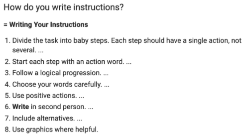

Lab 4: Pesudocoding and Problem-Solving
Subject
According to Wes, this is what the lab is supposed to be?
"With your partner, pseudocode an everyday task most students may not be familiar with. Examples include, changing a tire, making salsa, baking bread, getting an A in a class, or making art.Create a list of high-level tasks. If necessary, break complicated tasks down into sub-steps.Put this in outline form".
Challenges
I was very confused by the lab but I did manage to work through it thanks to help of Everett. He does not get paid to help me and he honestly should lol. It was mainly an issuse of the instructions being somewhat confusing.
Results
I know how to do Javascrpit a little bit! Still don't know a lot but I kinda know how it looks like in practice.Pesudocoding Simple List
How to make a ard boiled Egg
- Get a deep saucepan
- Put eggs in saucepan
- Fill saucepan with water unitl eggs are submered
- Turn on heat on medium-high
- Let eggs boil for 10-12 minutes
- After boiled, drain hot water and run under cold water
- Peel shells under cold water
- And Viola! Now you have boiled eggs
//Get a deep saucepan
//Put eggs in saucepan
//Fill saucepan with water unitl eggs are submered
//Turn on heat on medium-high
//Let eggs boil for 10-12 minutes
//After boiled, drain hot water and run under cold water
//Peel shells under cold water
//And Viola! Now you have boiled eggs
Kinda more complex Pesudocoding
Programing Character Movement
- display maze path
- detect player input
- move based on input
- display new path possible
- move throught maze until goal reached
//display maze path
//detect player input
//move based on input
//display new paths possible
//move through maze unil goal reached